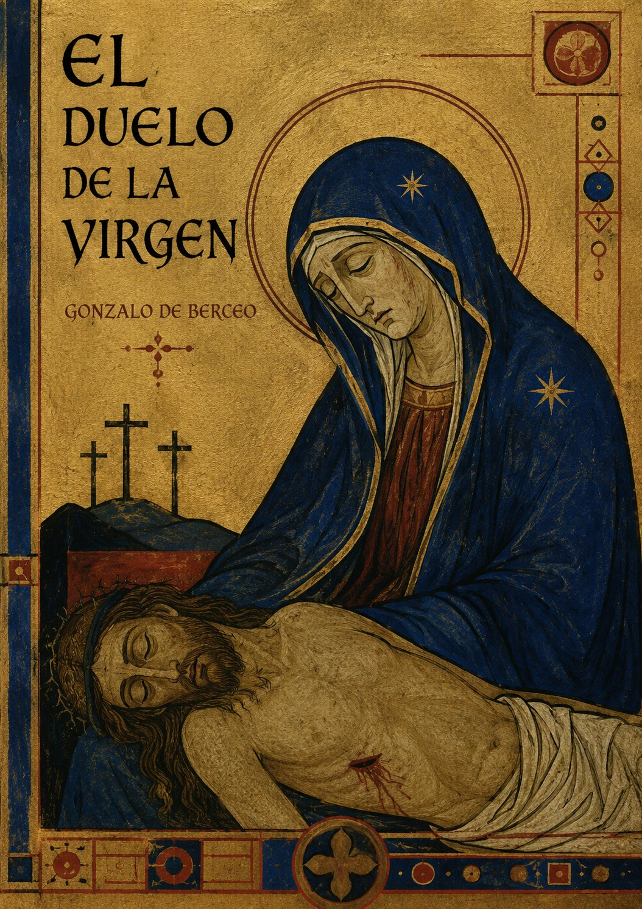

Escucha ahora
SINOPSIS
Poema devocional de Gonzalo de Berceo, pionero del mester de clerecía, en el que la Virgen narra en primera persona su dolor al presenciar la Crucifixión de su hijo. Estructurado como un planto —un lamento ritual—, combina el relato bíblico con una intimidad emocional que buscaba conmover directamente a un público medieval devoto.
CAPÍTULOS
El prendimiento y el camino al Calvario
La Virgen al pie de la cruz
El planto: el lamento de la Madre
El descendimiento
La sepultura y el consuelo final
RESEÑAS

Excelente